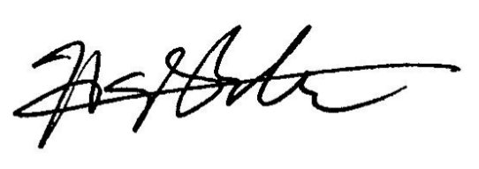

Préface
Depuis la naissance des systèmes multi-agents (SMA), on a reconnu la possibilité de distribuer le fardeau de leur calcul sur plusieurs processeurs (CPU). Et, en fait, dans les domaines robotiques, cette distribution est automatique parce que les robots sont distincts les uns des autres. Mais de plus en plus, les SMA servent pour la simulation ou même l’optimisation, applications qui n’imposent aucune distribution intégrale sur plusieurs CPU, mais dans lesquelles la vitesse de calcul est encore plus importante que dans la robotique. Bien que les méthodes soient bien développées pour la simulation numérique distribuée, les SMA n’ont pas profité de ces avancées. Malgré quelques efforts provisoires, la plupart des chercheurs continuent de travailler avec des agents qui sont limités par un seul processeur de type von Neumann. Quand bien même, des processeurs avec plusieurs coeurs d'exécutions sont de plus en plus accessibles par exemple grâce au GPGPU.
L'oeuvre du Dr. Hermellin est la première vue d'ensemble de ce problème. Il a soigneusement sondé les oeuvres précédentes, deviné les verrous qui gênent la diffusion du GPGPU dans les SMA, proposé une résolution qui est à la fois pratique et théoriquement élégante, et évalué cette solution en détail du point de vue de sa performance dans plusieurs problèmes bien connus. Sa thèse est destinée à devenir un guide principal pour les chercheurs et ingénieurs dans le domaine des SMA.
Cette oeuvre s'intéresse également à l'environnement comme une abstraction de premier ordre dans les SMA, qui était exposée dans l'équipe du Prof. Ferber, et en particulier par le Dr. Michel, les directeurs de cette thèse. On mesure la valeur d’une théorie scientifique par ses prédictions et par la clarté qu’elle apporte aux analyses subséquentes. Les résultats de Dr. Hermellin nous donnent de l’évidence formidable pour des conceptions centrées sur l’environnement. Pour nous, qui avons souligné depuis longtemps l’importance de l’environnement, voici une confirmation forte de notre intuition.
Désormais, cette thèse deviendra une référence essentielle pour la conception des SMA. J’offre mes félicitations au Dr. Hermellin, et aussi à ses encadrants le Dr. Michel et le Prof. Ferber, pour cette contribution éclatante.

H. Van Dyke Parunak, Ph.D.
Président et Chief Scientist
ABC Research, LLC
Ann Arbor, MI, USA
le 14 novembre 2016